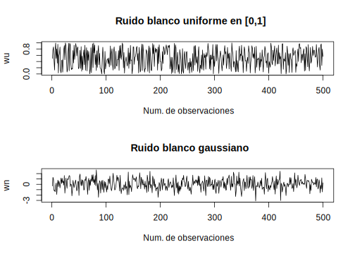
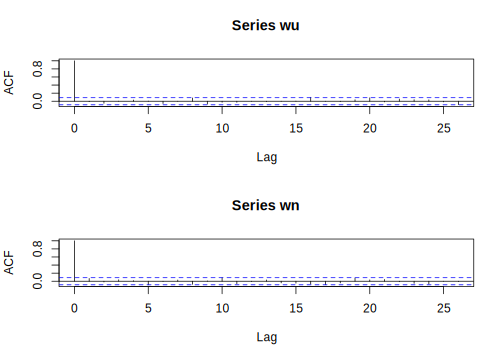
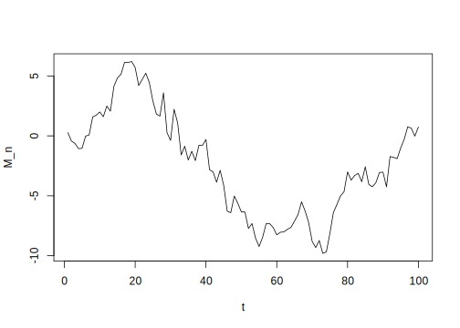
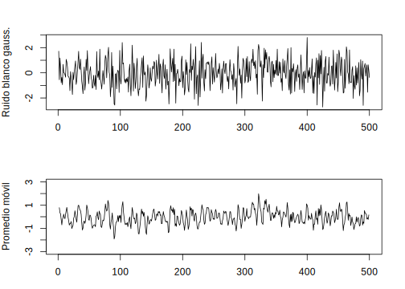

Capítulo 3 Modelos de series de tiempo
Como indicamos en el capítulo anterior el objetivo principal en el análisis de series de tiempo es desarrollar modelos matemáticos que provean una descripción apropiada para los datos muestrales. Recordando las definiciones 1.7 y 2.1 podemos describir los modelos generales útiles para la descripción de series de tiempo
3.1 Modelos Estocásticos
3.1.1 Procesos Estocásticos
De la definición de procesos estocásticos (Definición 2.1), las variables aleatorias de la familia (medibles para todo \(t\in T\)) son funciones de la forma \[x(\omega,t):\Omega\times T\to\mathbb{R}\] Para \(T=\mathbb{N}\), tenemos un proceso en tiempo discreto y para \(T\subset\mathbb{R}\) tenemos un proceso en tiempo continuo. En lo que respecta a este libro, consideraremos como subconjunto de índices \(T=(0,\infty)\).
Como ya indicamos, usaremos la notación \(X_t\) para denotar la realización de un proceso estocástico \(x_t(\omega*)\) cuando no haya lugar a confución. De esta forma, adoptaremos sin pérdida de generalidad, el conjunto de índices habitual de las series de tiempo en el ámbito de las finanzas y economía \(I=(1,T)\).
De lo anterior, se tiene que los procesos estocásticos suelen ser descritos mediante su distribución conjunta de probabilidades, de manera que la relación que existe entre una realización y un proceso estocástico es análoga a la existente entre la muestra y la población en el análisis estadístico clásico.
3.1.2 Momentos, Varianza, Covarianza y Correlación
3.1.3 Variación de un proceso
Sea \(P_n=\{0=t_0<t_1<\cdots<t_i<\cdots<t_n=t\}\) una partición cualquiera del intervalos \([0,t]\) en \(n\) subintervalos y denotemos por \[||P_n||=\max\{j=0,1,\ldots,n-1(t_{j+1}-t_j)\}\] el tamaño de paso máximo de discretización de la partición \(P_n\).
Si \(x\) es continuo y tiene variación acotada cuadrática finita, entonces su variación total es infinita. Note que \(V_t(x)\) y \([x,x]_t\) son también procesos estocásticos.
3.1.4 Martingalas
En teoría de probabilidad, un proceso estocástico de tipo martingala (galicismo de martingale) es todo proceso caracterizado por no tener deriva. Este tipo de procesos estocásticos reciben su nombre de la estrategia de la martingala, un método de apuestas que tuvo cierta fama en el siglo XVIII. La estrategia de la martingala consiste en volver a apostar por el total perdido al momento de incurrir en una pérdida en un juego de azar,. En la nueva apuesta, el jugador tiene la posibilidad de recobrar todas sus pérdidas, por lo que podría parecer que a largo plazo la esperanza de ganancia con esta estrategia se mantienen constantes y a favor del jugador. De hecho, estadísticamente es así: el capital medio del jugador (esto es, el dinero que el jugador tiene a su disposición para jugar) se mantiene constante. El problema reside en que, al incurrir en sucesivas pérdidas, el jugador que siga la estrategia de la martingala se ve obligado a apostar de nuevo cantidades cada vez mayores (las pérdidas acumuladas), que tienden a crecer exponencialmente. Al cabo de unos pocos ciclos de apuestas, el jugador, cuyos recursos son habitualmente muy inferiores a los de la banca, se ve arruinado al ser incapaz de apostar de nuevo por el total de sus pérdidas. Evitar jugadores que intenten seguir la estratega de la martingala es de todos modos una de las razones por las que los casinos actuales establecen límites máximos de apuesta.
La estrategia de la martingala se popularizó en el siglo XVIII con fama de ser una estrategia ingenua y propia de mentes simples, puesto que aunque en apariencia es infalible, sin embargo, está abocada a arruinar al jugador. Recibe el nombre de los habitantes de la localidad francesa de Martigues (martingales en francés), situada en las cercanías de Marsella, que por aquel entonces tenían fama de ser ingenuos y simplones.
El concepto de la martingala en la teoría de probabilidades fue introducido por Paul Pierre Lévy, y una gran parte del desarrollo original de la teoría la realizó Joseph Leo Doob. Parte de la motivación para ese esfuerzo era demostrar la inexistencia de estrategias de juego infalibles.
El concepto fue inmediatamente aplicado al análisis de procesos bursátiles. Uno de los resultados más importantes de la matemática financiera es, precisamente, que un mercado perfecto sin posibilidades de arbitraje es una martingala.
Para cada proceso estocástico \(\{x_t\}_{t\geq0}\) y para cada \(t\), podemos asociar una \(\sigma\)-álgebra denotada por \(\mathcal{F}_t=\sigma\{x_s:0\leq s\leq t\}\), y que además es la \(\sigma\)-álgebra generada por \(x\); es decir, la \(\sigma\)-álgebra más pequeña (minimal) de \(\mathcal{F}\) que hace a \(x(s,\omega)\) medible para cada \(0\leq s\leq t\).
En otras palabras \(X=\{X_t\}_{t\geq0}\) es \(\mathcal{F}_t\)-adaptado cuando el valor de \(X_t\) en el tiempo \(t\) solo depende de la información contenida en la realización hasta el instante \(t\).
Dado un espacio de probabilidad \((\Omega,\mathcal{F},P)\) y una filtración \(\{\mathcal{F}_t,t\geq0\}\), entonces definimos el espacio de probabilidad filtrado a la cuaterna \((\Omega,\mathcal{F},\{\mathcal{F}_t\}_{t\geq0},P)\).
Definición 3.8 Sea \((\Omega,\mathcal{F},\{\mathcal{F}_t\}_{t\geq0},P)\) un espacio de probabilidad filtrado. Un proceso \(X_t\) con \(t\in T\), \(T\subseteq\mathcal{R}\) un conjunto de índices, es una martingala relativo a la filtración \(\{\mathcal{F}_t,t\geq0\}\), si
\(X_t\) es adaptado a la filtración \(\{\mathcal{F}_t,t\geq0\}\)
\(X_t\) es integrable, es decir, \(\mathbb{E}|X_t|<\infty\),
Para cualesquieras \(s\) y \(t\) con \(s<t\), \(\mathbb{E}(X_t|\mathcal{F}_s)=X_s\) c.s.
La sucesión de variables aleatorias \(M_n\) se llama paseo aleatorio y es una supermartingala si \(\mu\leq0\), una martingala si \(\mu=0\) y una submartingala si \(\mu\geq0\).
Es fácil demostrarlo, sencillamente usamos el hecho de que \[M_{n+1}=M_n+X_{n+1}\] y que \(M_n\) y \(X_{n+1}\) son independientes. Podemos generar tal proceso en R.n=100
mu=0
sigma=1
X=rnorm(n,mu,sigma)
M=cumsum(X)
plot(M,type = "l",xlab = "t",ylab = "M_n")Un modelo común para modelar el precio de la acción en tiempo \(t=n\) es
\[M_{n+1}=M_nY_n\]
donde \((Y_n-1)\times100\) representa (en porcentaje) la variabilidad de la acción. Usando las propiedades de esperanza condicional (Apéndice), es muy sencillo demostrar que
\[\mathbb{E}(M_{n+1}|M_0,\ldots,M_n)=M_n\mathbb{E}(Y_n)\]
En particular, si \(Y_1,\ldots,Y_n\) son idénticamente distribuidas con \(\mathbb{E}(Y_1)=\mu\) tenemos que \(M_n\) es
Una martingala si \(\mu=1\)
Una submartingala si \(\mu>1\)
Una supermartingala si \(\mu<1\).
Dos modelos bien conocidos de lo anterior son
- Modelo Black-Scholes discreto.
Sean \(Y_1,\ldots,Y_n\) definidas por
\[Y_n=e^{Z_n}\]
donde \(Z_1,\ldots,Z_n\) son variables aleatorias independientes normales \(N(\mu,\sigma^2)\).
- Modelo Binomial.
Sean \(Y_1,\ldots,Y_n\) definidas por
\[P(Y_i=(1+t)e^{-r})=p\quad\text{ y }\quad P(Y_i=(1+t)^{-1}e^{-r})=1-p\]
La constante \(r\) es la tasa de interés y los factores \((1+t)\) y \((1+t)^{-1}\) modelan las variaciones del mercado y garantizan que el precio tiene la forma \(M_0(1+t)^ye^{-nr}\), con \(|y|\leq n\). La volatilidad del precio está asociada a \(p\).
3.1.5 Propiedad de Markov
La propiedad de Markov establece que si conocemos el estado actual de un proceso estocástico, entonces el comportamiento futuro de dicho proceso es independiente de su pasado. Un proceso \(X_t\) tiene la propiedad de Markov si la distribución condicional del proceso \(X_t\) dado el proceos en el instante \(X_t=x\), no depende de los valores pasados.
La propiedad de Markov implica una expresión que resulta muy útil en términos de la esperanza condicional por la \(\sigma\)-álgebra de eventos, la cual es válida tanto para procesos en tiempo discreto como en tiempo continuo.
Las definiciones y propiedades anteriores son temas de estudio de gran importancia y con una amplia teoría matemática que está fuera del alcance de este libro, pero lo que hemos descrito es suficiente para el objetivo del mismo.
3.2 Modelos lineales
Los modelos lineales proporcionan un enfoque natural que permite analizar el comportamiento de los procesos estocásticos o series de tiempo y en especial a lo referente a finanzas y economía. En esta sección discutiremos la estructura de dependencia, autocorrelación, modelización y predicción de los modelos lineales teóricos, con los correspondientes comandos en R para generar y nalaizar dichos procesos.
3.2.1 Proceso de Ruido Blanco
Las series de tiempo generadas de esta manera son muy usadas como modelos para ruido en aplicaciones de ingeniería. La designación “blanco” se origina de la analogía con la luz blanca e indica que todos los posibles períodos de oscilación están presentes con igual intensidad.
En particular, una sucesión de variables aleatorias iid con media 0 y varianza \(\sigma_w^2\) representa un caso especial de un proceso de ruido blanco. Este proceso lo denotaremos por \(w_t\sim WN(0,\sigma_w^2)\). Un muy usado ruido blanco es el ruido blanco gaussiano, donde las \(w_t\) son variables aleatorias normales o gaussianas con media 0 y varianza \(\sigma_w^2\) y denotadas como \(w_t\sim iidN(0,\sigma_w^2)\).
La función de media de un ruido blanco es trivial, es decir \[\mu_w=\mathbb{E}(w_t)=0.\] Calculemos la función de autocovarianza de \(w_t\) \[\begin{eqnarray*} \gamma_w(s,t) &=& \mathbb{E}[(w_s-\mu_s)(w_t-\mu_t)] \\ &=& \mathbb{E}[w_sw_t] \\ &=& \begin{cases} \sigma_w^2, &\text{ si }s=t \\ 0, &\text{ si }s\neq t \end{cases} \end{eqnarray*}\]La última igualdad se sigue del hecho de que \(w_s\) y \(w_t\) son no-correlacionados para \(s\neq t\) por lo que \(\mathbb{E}(w_sw_t) = \mathbb{E}(w_s)\mathbb{E}(w_t)=0\).
#-----------------------------------------
# Ruidos blancos
#-----------------------------------------
# Uniforme [0,1]
wu=runif(500,0,1)
# Gaussiano
wn=rnorm(500,0,1)
# Graficos
par(mfrow=c(2,1))
plot(wu,type = "l",xlab = "Num. de observaciones",
main = "Ruido blanco uniforme en [0,1]")
plot(wn,type = "l",xlab = "Num. de observaciones",
main = "Ruido blanco gaussiano")
# Funciones de autocovarianza (ACF)
acf(wu)
acf(wn)
#------------------------------------------
# Promedio movil
#------------------------------------------
# Uniforme
vu=filter(wu,sides = 2,rep(1/3,3))
par(mfrow=c(2,1),mar=c(3,4,3,2))#
plot.ts(wu,xlab=" ",ylab="Ruido blanco unif.")
plot.ts(vu,ylim=c(0,1),ylab="Promedio móvil")
# Gaussiano
vn=filter(wn,sides = 2,rep(1/3,3))
par(mfrow=c(2,1),mar=c(3,4,3,2))
plot.ts(wn,xlab=" ",ylab="Ruido blanco gauss.")
plot.ts(vn,ylim=c(-3,3),ylab="Promedio móvil") En la parte superior de cada uno se observan los ruidos blancos y en la parte inferior los respectivos promedios móviles. Podemos notar que las series de promedio móvil suavizan el comportamiento de las series originales, si tomamos más puntos en el promedio mayor será el suavizado.
set.seed(154)
w=rnorm(500,0,1)
X=cumsum(w)
wd=w+0.2; Xd=cumsum(wd)
plot.ts(Xd,ylim=c(-40,80))
lines(X,col="red")
lines(0.2*(1:500),lty="dashed",col="blue")Figura 3.1: Gráficos de caminos aleatorios: con tendencia (negro), sin tendencia (rojo)